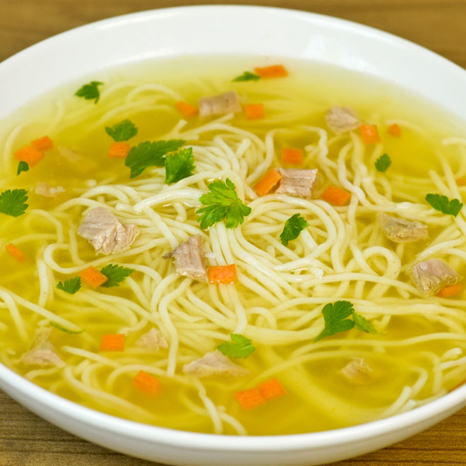
Supe tradiționale
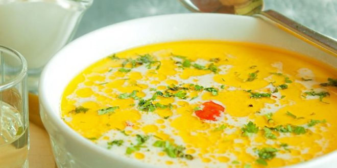
Ciorbe tradiționale
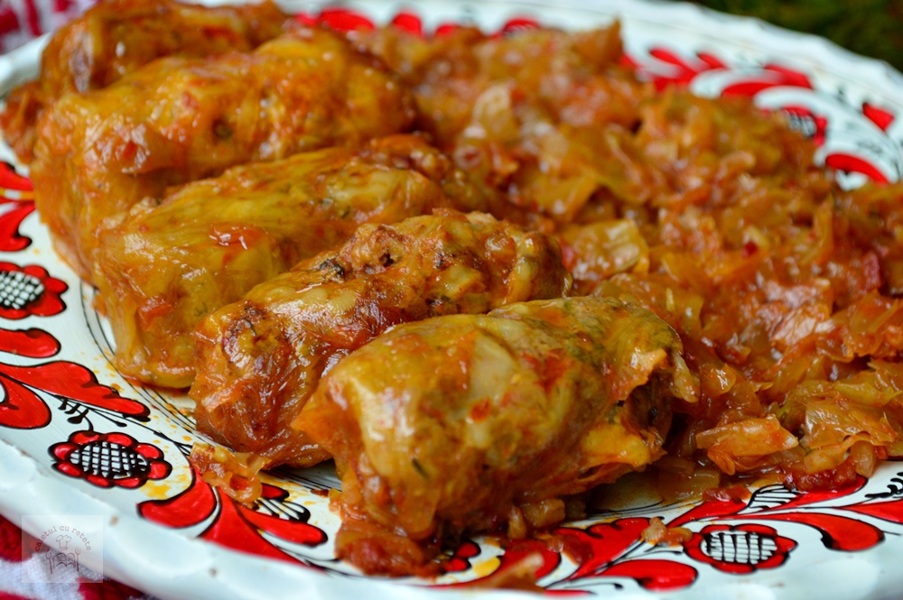
Sarmale în foi de varză și vită
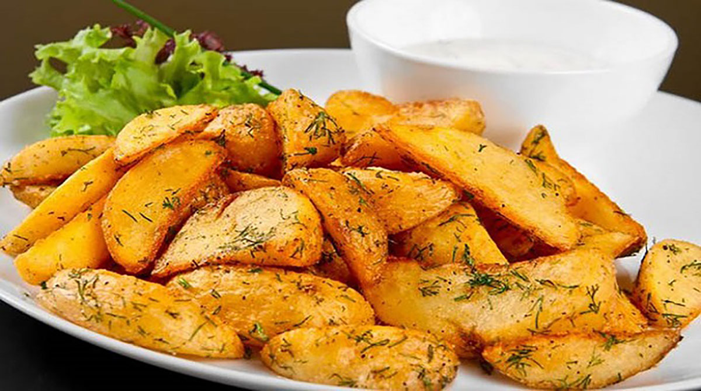
Cartofi țărănești la cuptor
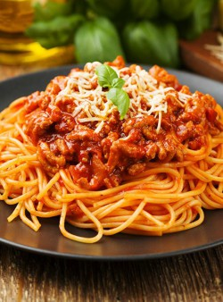
Paste și spaghete
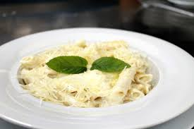
Paste și spaghete
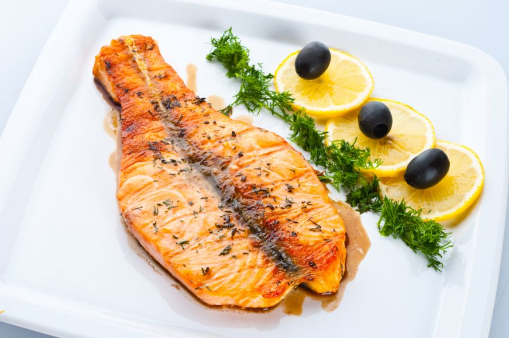
Pește
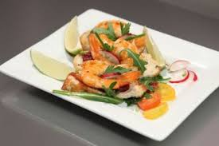
Creveți
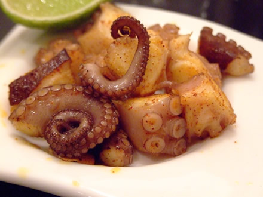
Pește și fructe de mare
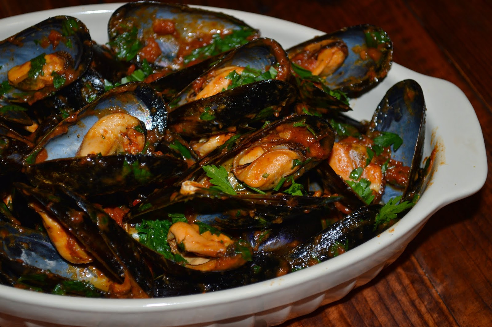
Pește și fructe de mare

Brioșe
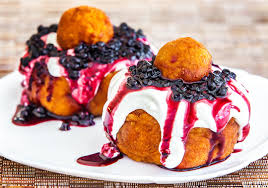
Papanași
Despre noi,
Pasionate de gastronomie, iubitoare ale mâncărurilor tradiționale românești, dar și culese de pe alte meleaguri, ne-am adunat cunoștințele în domeniu și împreună am pus bazele acestui site cu rețete. O mare parte dintre acestea sunt extrase din cărțile vechi ale bunicii, altele reinterpretate, și unele gândite și experimentate chiar de noi. Sperăm ca aceste rețete să vă inspire și să vă scoată din cumpănă dacă ați epuizat mâncărurile din meniul dumneavoastră și vă așteptăm părerile în secțiunea "Contact" unde vă stăm la dispoziție cu orice nelămurire întâmpinați. Vă dorim mult spor în bucătărie și poftă bună!